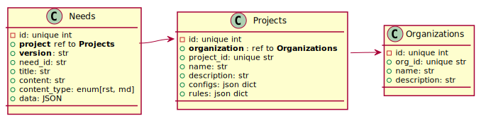
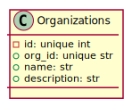
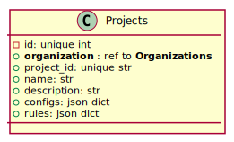
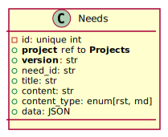

Open-Needs Server#
- status
work in progress
- repository
- user documentation
Open-Needs Server is a REST based Database to create, manage, link and automate life cycle objects.
It is designed to be used as backend in use-case specific tools like Sphinx-Needs.
Different Interfaces can be build to access the data in different tools.
![@startuml
skinparam nodesep 20
skinparam ranksep 100
node "Open-Needs Server" as server #6fa {
card Security #fff {
card "Users"
card "Roles"
card "Authentication\n& Authorization"
}
card Interfaces as int #fff {
card "REST API"
card "Python API\nfor plugins"
}
card "Event system" as event #fff {
card "Handlers"
card "Dispatcher"
}
card "Plugin system" as plugins #fff {
card "Registration"
card "API access"
}
card Configuration as conf #fff {
card "JSON based"
card "ENV / CLI support"
}
int -[hidden]-> conf
plugins -[hidden]-> event
}
@enduml](../_images/plantuml-53185fa88cecc52d887713f13ccdb6364eb9f51c.svg)
Philosophy#
No strict schema for need data
No rules checks
This philosophy is for this project only. Extensions and interfaces may introduce functions to e.g. check project rules before a Need gets stored in the Database.
Technology Stack#
Open-Needs Server will be based on FastAPI, which provides all needed functionality for the API.
FastAPI#
Useful FastAPI extensions may be:
A great list of FastAPI links can be found at https://github.com/mjhea0/awesome-fastapi.
Database#
Open-Needs Server shall be based on SQL and support most SQL-based databases, like SQLite and PostgreSQL.
Therefore it uses as ORM SQLAlchemy, which works pretty good with FastAPI.
Hint
Projects like SQLModel which allows to reuse the same model-definition for FastAPI routes and database models, shall not be used. Mostly because of the lack of customization, missing features (JSON fields) and because the models/schemas of Open-Needs Server may differ between FastAPI and SQLAlchemy (as a lot of values may get calculated).
Configuration#
To load and handle configurations from multiple files and source (files, ENV, cli), Open-Needs Server will use the great and well documented Python library Dynconf for this.
Extensions#
Extensions need to be registered during runtime of Open-Needs, so that their features become part of the backend. They are used to extend the internal data handling logic of Open-Needs by registering their functions in the Open-Needs event system.
Use cases may be: Collect metrics, check project rules before need creation, check authentication, trigger external systems.
The goal is that an Open-Needs extension, can provide new features for backend and/or frontend.
For more details, please take a look into Extensions.
Interfaces#
Interfaces are a way to access the data of Open-Needs. Open-Needs provides a REST API only.
Currently planned is the improvement of Sphinx-Needs to support Open-Needs.
Security#
The data inside Open-Needs Server must be secured and access and edit rights must be controllable.
Example: Not all users shall be allowed to update needs for release version (e.g. Product_1.0), but for “sub-versions” (e.g. 1.0_dev_feature_x).
Therefore a user management including roles and permissions must be implemented.
For the implementation of authentication mechanisms(e.g. OAuth2), FastAPI internal solutions shall be used.
Schemas#
All tools of Open-Needs shall use json-schemas to define the structure of information.
This kind of schema is mostly used for:
project configuration structure
project rules structure
needs data structure
The goal is to allow any programming language to understand, analyse and validate Open-Needs data.
For more details, please take a look into Open-Needs Models.
Database schema#
Main tables:
Organizations
Projects
Needs

Organizations#
A unity to represent a company or a project team.

Projects#
Specifies a specific project inside an organizations.
This should be normally related to a Sphinx project or any other technical project, which contains the source code for needs.

Needs#
Stores the final needs.
Each row is a need, linked to a specific project of an organization.
Only title and content get stored as columns. The rest of the data is stored in a single data column of type
JSON.
This allows to store needs of different data schemas (e.g. extra fields), without touch ing the structure of database tables.
The content of data is filterable by all common SQL-compliant databases.

REST API#
All REST API endpoint has the following, common config:
- GET /any/open-needs/url#
- Status Codes
200 OK – No error
401 Unauthorized – Authentication needed
- Request Headers
Accept – the response content type depends on Accept header
Authorization – optional OAuth token to authenticate
- Response Headers
Content-Type – this depends on Accept header of request
A complete list of all defined routes can be found here: HTTP Routing Table.
Organizations#
- GET /#
Lists all available organizations
- Example
- POST /#
Creates a new organization
- GET /(str: org_id)#
Returns information of specific organization, including all projects.
- PUT /(str: org_id)#
Updates an existing organization
Projects#
- POST /(str: org_id)#
Creates a new project inside the given organization.
- GET /(str: org_id)/(str: project_id)#
Returns information of a specific project inside an organization. Includes:
configs
rules
versions
- PUT /(str: org_id)/(str: project_id)#
Updates a project. Allows to set configs and rules.
Versions#
Versions are an attribute of a Need object only.
There is no extra table for versions and they get create by simply setting the related version attribute
of a need.
Open-Needs automatically collects this information and knows, which versions are available.
- GET /(str: org_id)/(str: project_id)/(str: version)#
Returns all needs of a given version inside a specific project of an organization.
Needs#
- POST /(str: org_id)/(str: project_id)/(str: version)#
Allows to create a new need.
- GET /(str: org_id)/(str: project_id)/(str: version)/(str: need_id)#
Returns a specific need.
- PUT /(str: org_id)/(str: project_id)/(str: version)/(str: need_id)#
Updates a specific need.
Filtering#
- POST /filter#
Filters needs with a given filter string.
Warning
Sphinx-Needs currently support Python based filter string only, which allows to execute any Python code. This is too dangerous for a web application, so that another solution must be found or at least “Python based filter string feature” must be activated by user.
Event system#
Open-Needs Server is based on an event system, which is used to execute internal functions but also functions from extensions or other sources. All functions have to be registered via the Open-Needs API.
Current events are:
Lib handling
open_needs_initopen_needs_init_doneopen_needs_loading_extensionsopen_needs_loading_extensions_doneopen_needs_shutdownopen_needs_shutdown_done
Database handling
database_opendatabase_open_donedatabase_closedatabase_close_done
Project handling
project_createproject_create_doneproject_readproject_read_doneproject_changeproject_change_doneproject_deleteproject_delete_done
Needs handling
need_createneed_create_doneneed_readneed_read_doneneed_changeneed_change_doneneed_deleteneed_delete_done
Attention: It is not allowed to make any object manipulations on events with postfix _done.
Events with _done are mostly for notification and to update additional objects, like some metrics.
If events are missing, feel free to create a PR.
Discussion#
For ideas and discussions going into details, please create a specific ticket on our github project.
For any other short information, feel free to add a comment.